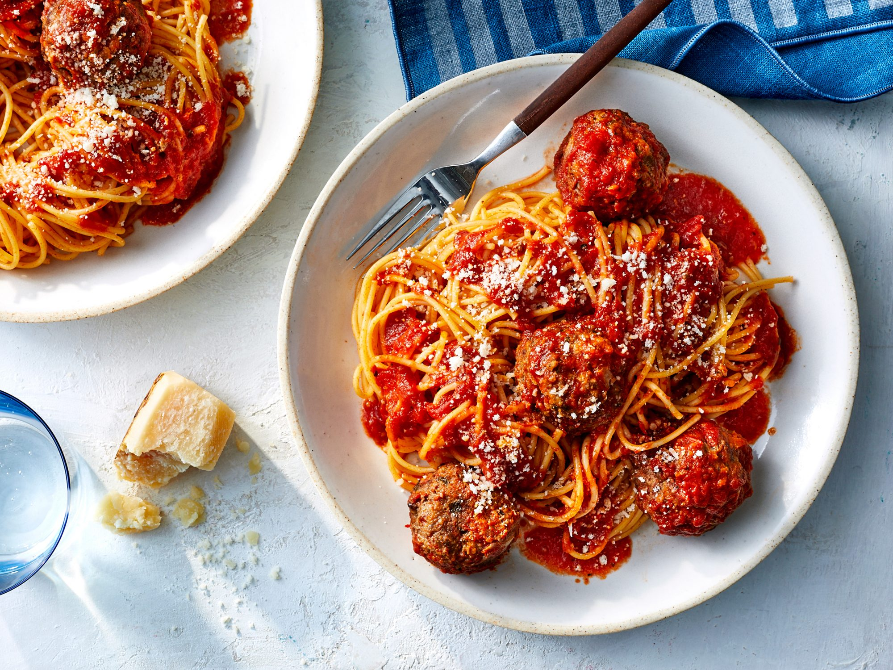

Spaghetti and Meatballs
Description
Serve a classic Italian-inspired dish for dinner. The easy meatball method will make you skip buying store-bought meatballs for good. Whether you're serving adults or a family-friendly crew, this dish is a pitch-perfect crowd pleaser.

Ingredients
- 1 pound spaghetti
- 1 (25 oz.) jar tomato sauce
- 1 ½ pounds ground beef
- ½ cup chopped onion
- ¼ cup chopped fresh parsley
- 1 egg, lightly beaten
- ½ cup grated fresh Parmesan cheese
- 2 cloves garlic, minced
Steps
- Preheat oven to 375°F. In a large pot of boiling salted water, cook spaghetti, stirring often, until al dente, about 10 minutes. Drain well in a colander. In a large, wide saucepan or deep skillet, heat tomato sauce over low heat while you proceed.
- While pasta is cooking, combine beef, soaked bread crumbs, cheese, onion, parsley, egg, garlic and salt in a large bowl. Form mixture into balls slightly larger than golf balls. (They will shrink as they cook.) Lay meatballs out on two nonstick or oiled baking sheets and bake in oven until nicely browned, about 10 minutes.
- Transfer meatballs from oven with tongs and place into simmering sauce to combine. Serve meatballs and sauce on top of spaghetti.